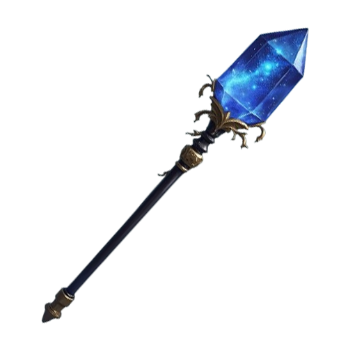

<div class="page-header">
  <h1>Swirling Moon</h1>
  <div class="luminary-subtitle">Staff of Luana</div>
</div>
<div class="page">
  <div class="info">
    
    <div class="item-info">
      <div class="item-text">Luminary Weapon</div>
      <div class="item-text">Simple Melee (Quarterstaff)</div>
      <div class="item-text"><b>Attunement Item</b></div>
      <div class="item-text"> While you are attuned to this staff, you can cast the <b>Moonerang</b> and <b>Lunar Shield</b> spells.</div>
    </div>
  </div>
  <div class="nav-buttons-div">
    <mat-card class="nav-buttons-card">
      <div class="nav-buttons-header">Spells</div>
      <mat-card-content class="nav-buttons-content">
        <button mat-stroked-button class="nav-button" (click)="navigate('spell-moonerang')">
          Moonerang
        </button>
        <button mat-stroked-button class="nav-button" (click)="navigate('spell-lunar-shield')">
          Lunar Shield
        </button>
      </mat-card-content>
    </mat-card>
    <mat-card class="nav-buttons-card">
      <div class="nav-buttons-header">Augment Runes</div>
      <mat-card-content class="nav-buttons-content">
        <button mat-stroked-button class="nav-button" (click)="navigate('ar-general')">
          General
        </button>
        <button mat-stroked-button class="nav-button" (click)="navigate('ar-moonerang')">
          Moonerang
        </button>
        <button mat-stroked-button class="nav-button" (click)="navigate('ar-lunar-shield')">
          Lunar Shield
        </button>
      </mat-card-content>
    </mat-card>
  </div>
  <div class="sub-title-down">
    <h2>Spells</h2>
  </div>
  <div class="flex-row-div">
    <spell-info-block
      id="spell-moonerang"
      spellName='Moonerang'
      level='2nd'
      castTime='1 action'
      range='20 ft.'
      components='V, S'
      duration='Instantaneous'
      school='Evocation'
      attack='Ranged spell attack'
      damage='3d6 radiant damage'
      spellText={{moonerangText}}>
    </spell-info-block>

    <spell-info-block
      id="spell-lunar-shield"
      spellName='Lunar Shield'
      level='2nd'
      castTime='1 action'
      range='Self, 10 ft. sphere'
      components='V, S, M (moonlight)'
      duration='Instantaneous'
      school='Abjuration'
      attack='None'
      damage='(2d6+spellcast mod) temp hp'
      spellText={{lunarShieldText}}>
    </spell-info-block>
  </div>

  <div class="sub-title-up">
    <h2>Augment Runes</h2>
  </div>

  <div class="flex-row-div">
    <div class="augment-col-div">
      <div class="augment-title" id="ar-general">General</div>
      <augment-rune-card iconName="luanaBlessing" augmentName="Luana's Blessing" rarity="legendary" description="Whenever you gain temporary hit points, you can choose to add them to any temporary hit points you already have. Your total amount of temporary hit points can't exceed your hit point maximum."></augment-rune-card>
      <augment-rune-card iconName="precision" augmentName="Improved Critical" rarity="epic" description="Your spell attacks score a critical hit on a roll of 19 or 20."></augment-rune-card>
      <augment-rune-card iconName="blueBlock" augmentName="Improved Defences" rarity="rare" description="You gain a +1 bonus to AC and saving throws."></augment-rune-card>
      <augment-rune-card iconName="blueMan" augmentName="Improved Magic" rarity="rare"description="You gain a +1 bonus to spell attack rolls and to your spell save DC."></augment-rune-card>
      <augment-rune-card iconName="purpleOrb" augmentName="Improved Reserve" rarity="uncommon" description="You gain one additional 2nd-level spell slot. This slot is regained when you finish a long rest."></augment-rune-card>
      <augment-rune-card iconName="glitch" augmentName="Missmatch" rarity="uncommon" description="Your hit point maximum increases by 5."></augment-rune-card>
    </div>
    <div class="augment-col-div">
      <div class="augment-title" id="ar-moonerang">Moonerang</div>
      <augment-rune-card iconName="shieldbreak" augmentName="Shield Breaker" rarity="legendary" description="Moonerang no longer deals damage to creatures with temporary hit points. At the end your spell, each creature that got hit by Moonerang loses all their temporary hit points."></augment-rune-card>
      <augment-rune-card iconName="blueClaw" augmentName="Bouncy" rarity="epic" description="Moonerang no longer needs to return to you between bounces. Instead, it can bounce freely between creatures within range."></augment-rune-card>
      <augment-rune-card iconName="redMark" augmentName="Déjà Vu" rarity="epic" description="Moonerang can hit the same creature more than once, but a different creature must be hit between each instance."></augment-rune-card>
      <augment-rune-card iconName="chains" augmentName="Chainerang" rarity="rare" description="Moonerang deals an additional radiant damage for each time it has bounced before hitting a target."></augment-rune-card>
      <augment-rune-card iconName="shattering" augmentName="Precision" rarity="rare" description="Before you make a spell attack with Moonerang, you can choose to take a -5 penalty to the attack roll. If the attack hits, you add +10 to the damage."></augment-rune-card>
      <augment-rune-card iconName="sharp" augmentName="Distant" rarity="uncommon" description="The range of Moonerang is increased by 20 ft."></augment-rune-card>
    </div>
    <div class="augment-col-div">
      <div class="augment-title" id="ar-lunar-shield">Lunar Shield</div>
      <augment-rune-card iconName="purpleSpark" augmentName="New Moon" rarity="legendary" description="You can cast Lunar Shield without providing its material component (moonlight)."></augment-rune-card>
      <augment-rune-card iconName="yellowSpin" augmentName="Hasty Moon" rarity="epic" description="You can cast Lunar Shield using a bonus action, rather than its normal casting time."></augment-rune-card>
      <augment-rune-card iconName="cyanMan" augmentName="Lone Moon" rarity="rare" description="Lunar Shield no longer targets a sphere around you. Instead, when you cast the spell, you gain an additional 2d6 temporary hit points."></augment-rune-card>
      <augment-rune-card iconName="healing" augmentName="Refreshing Moon" rarity="rare" description="When you cast Lunar Shield, each target of the spell regains hit points equal to your spellcasting ability modifier."></augment-rune-card>
      <augment-rune-card iconName="purpleBoom" augmentName="Expanded Moon" rarity="uncommon" description="The radius of Lunar Shield's protective sphere is increased by 10 ft."></augment-rune-card>
      <augment-rune-card iconName="bubble" augmentName="Full Moon" rarity="uncommon" description=" When you roll temporary hit points for Lunar Shield, you can reroll any number of the dice. You must use the new rolls."></augment-rune-card>
    </div>
  </div>
</div>
